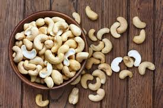
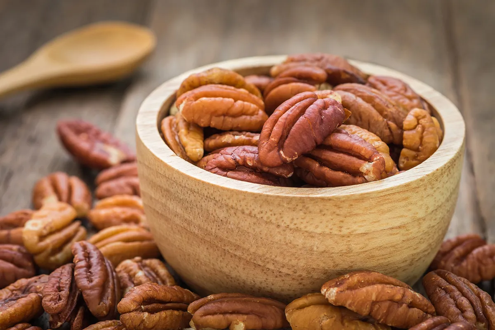
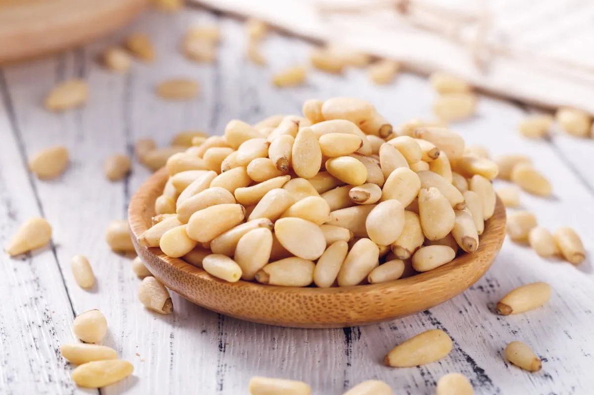

Le nostre offerte primaverili!!!

Acquista 14,99€/Kg
Anacardi
Per anacardi o noci di anacardio si intendono i semi oleosi
commestibili (frutta secca), o meglio gli acheni, della pianta arborea brasiliana
Anacardium occidentale Linn.
Gli anacardi sono alimenti piuttosto grassi ma anche ricchi di carboidrati e
proteine; non hanno una spiccata digeribilità, anche se ciò dipende molto dalla
porzione di consumo. In genere, se non da soli e in quantità molto ristrette,
vengono eliminati dalla terapia alimentare di chi soffre di patologie digestive.
| Anacardi, valori per 100g | |
|---|---|
| Energia | 553kcal |
| Fibre | 3,3g |
| Carboidrati | 30,19g |
| Grassi | 43,85g |
| Proteine | 18,22g |
| Acqua | 5,20g |
Acquista 14,99€/Kg

Acquista 8,50€/Kg
Noci pecan
Le noci Pecan sono alimenti vegetali inquadrati nel gruppo
della frutta secca. Hanno un valore energetico elevato ma anche un'ottima
concentrazione di grassi essenziali; il sapore è ricco e burroso.
Si possono consumare da sole o all'interno di preparazioni quali dessert, primi e
secondi piatti.
Le noci Pecan sono frutti tipici degli Stati Uniti, specie dell'area centro
meridionale, e del Messico.
Per la precisione, la presenza dell'albero Carya illinoensis si registra con maggior
densità in: Arkansas, Florida, Georgia, Illinois, Indiana, Iowa, Kentucky,
Louisiana, Mississippi, Missouri, Oklahoma, South Carolina, Tennessee, Texas, e dal
Coahulia sud a Jalisco e Veracruz.
La coltivazione dell'albero per la produzione delle noci Pecan non è antica. Pare
sia iniziata solo nel 1880 negli USA, paese che vanta una produttività annua fino
all'80-95% del complessivo mondiale (150.000-200.000 tonnellate annue per 10.000.000
di alberi).
Altre zone di coltivazione si collocano in America del sud, Cina, Australia, Sud
Africa e Israele; in Italia esistono piccoli appezzamenti di noci Pecan presso la
regione Sicilia.
Le cultivar sono composte essenzialmente da "cloni", ragion per cui è necessario che
alcuni di questi provengano da alberi diversi, poiché (a differenza di quelli nati
da seme) questi non sono in grado di autoimpollinarsi e richiedono esemplari
geneticamente estranei per la fecondazione.
| Noci pecan, valori per 100g | |
|---|---|
| Energia | 705kcal |
| Fibre | 9.4g |
| Carboidrati | 7.9g |
| Grassi | 71.8g |
| Proteine | 7.2g |
| Acqua | 5.0g |
Acquista 8,50€/Kg

Acquista 84€/kg
Pinoli
I pinoli sono i semi commestibili prodotti da alcune Specie
di pino; tra queste, la più nota è Pinus pinea, anche detta pino "domestico" o
"comune".
I pinoli sono dunque una parte della pigna, o meglio, dello strobilo; questo, altro
non è che uno "pseudo-frutto" finalizzato a proteggere e a propagare i piccoli semi
della pianta nell'ambiente; tali semi, detto appunto pinoli, si annidano tra le
scaglie legnose delle pigne e trovano ulteriore protezione nel guscio che li
avvolge.
Utili per fare il famossisimo pesto alla genovese.
Da 100kg di pigne si ottengono circa 25kg di pinoli con guscio e solamente 6-8 kg di
pinoli sgusciati.
Per ottenere il prodotto finito, le pigne vengono raccolte (nel periodo compreso tra
l'autunno e la primavera), accatastate e lasciate essiccare fino ai primi soli.
Il calore agevola l'estrazione dei pinoli che, dopo il prelievo, vengono sgusciati,
lavati, essiccati, selezionati e confezionati.
| Banane, valori per 100g | |
|---|---|
| Energia | 597kcal |
| Fibre | 4.5g |
| Carboidrati | 4.0g |
| Grassi | 50.3g |
| Proteine | 31.9g |
| Acqua | 4.3g |
Acquista 84€/kg